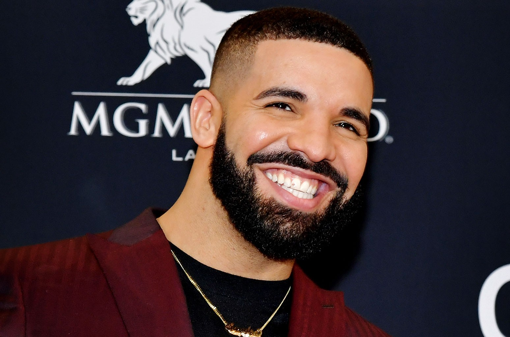

Elvis Aron Presley was born on January 8, 1935, in Tupelo, Mississippi. (He later changed the spelling of his middle name to the biblical form of Aaron.) Presley was supposed to be a twin, but his brother, Jesse Garon (sometimes spelled Jessie) was stillborn. From very humble beginnings, Presley grew up to become one of the biggest names in rock 'n' roll. Raised by loving, working-class parents, Presley's family had little money, and they moved from place to place frequently. He was deeply devoted to his parents, especially his mother, Gladys, and was raised to have a strong faith in God. Presley attended the Assembly of God Church with his parents, where gospel music became an important influence for him.

Aubrey Drake Graham was born in Toronto, Ontario, the son of Dennis Graham, an African-American musician born in Memphis, Tennessee, and Sandi (Sher) Graham, a Canadian Jewish educator. As a young man, Drake appeared in several commercials, for such retailers as Sears and GMC. In 2001, Drake rose to fame playing the role of "Jimmy Brooks", a character on Degrassi: The Next Generation (2001), a basketball star who is confined to a wheelchair after being shot by a classmate. In 2006, Drake launched his music career by releasing his first mix tape, "Room for Improvement". Three years later, his third mix tape, "So Far Gone", garnered him critical and commercial success, and, the following year, he released his official debut album, "Thank Me Later", to generally positive reviews. Aubrey Drake Graham has established himself as a multi-talented young Canadian, and the entertainment industry has great expectations for him.
Train is an American rock band from San Francisco, formed in 1993. The band currently consists of Patrick Monahan (lead vocals), Luis Maldonado (guitar), Hector Maldonado (bass, vocals), Jerry Becker (keyboards, guitar), Matt Musty (drums), Sakai Smith (backup vocals), and Nikita Houston (backup vocals). With a lineup that included original members Monahan, Rob Hotchkiss, Jimmy Stafford, Scott Underwood, and Charlie Colin, the band achieved mainstream success with their debut album Train, which was released in 1998 with the hit "Meet Virginia". Train's 2001 album, Drops of Jupiter contained the lead single "Drops of Jupiter (Tell Me)", which won two Grammy Awards in 2002. The album was certified double platinum.

Jacques Berman Webster II (born April 30, 1992), known professionally as Travis Scott (formerly stylized as Travi$ Scott), is an American rapper, singer, songwriter, and record producer. In 2012, Scott signed his first major-label deal with Epic Records. In November of the same year, Scott signed a deal with Kanye West's GOOD Music, as part of its production wing Very GOOD Beats. In April 2013, Scott signed a record deal with T.I.'s Grand Hustle imprint. Scott's first full-length project, the mixtape Owl Pharaoh, was self-released in 2013. It was followed with a second mixtape, Days Before Rodeo, in August 2014. His debut studio album, Rodeo (2015), was led by the hit single "Antidote". His second album, Birds in the Trap Sing McKnight (2016) became his first number one album on the Billboard 200. The following year, Scott released a collaborative album with Quavo titled Huncho Jack, Jack Huncho under the group name Huncho Jack. In 2018, his highly anticipated Astroworld was released to widespread critical acclaim and produced his first Billboard Hot 100 number one single, "Sicko Mode". In late 2019, Scott's record label Cactus Jack Records released the compilation album JackBoys which became the first number one album on the Billboard 200 of the 2020s.
Zac Brown Band is an American country/rock band based in Atlanta, Georgia. The lineup consists of Zachary Alexander "Zac" Brown (lead vocals, guitar), Jimmy De Martini (fiddle, vocals), John Driskell Hopkins (bass guitar, guitar, baritone guitar, banjo, ukulele, upright bass, vocals[7]), Coy Bowles (guitar, keyboards), Chris Fryar (drums), Clay Cook (guitar, keyboards, mandolin, steel guitar, vocals), Matt Mangano (bass guitar), and Daniel de los Reyes (percussion). The band has released seven studio albums along with two live albums, one greatest-hits album, and two extended plays. They have also 16 singles on the Billboard Hot Country Songs or Country Airplay chart, of which 13 have reached number 1. Their first album, The Foundation, is certified triple-platinum by the Recording Industry Association of America, while its follow-ups, You Get What You Give and Uncaged, are certified platinum. Artists with whom they have collaborated include Alan Jackson, Jimmy Buffett, Kid Rock, Jason Mraz, Dave Grohl, Chris Cornell and Avicii.
The Beatles were an English rock band formed in Liverpool in 1960. With a line-up comprising John Lennon, Paul McCartney, George Harrison and Ringo Starr, they are regarded as the most influential band of all time. The group were integral to the development of 1960s counterculture and popular music's recognition as an art form. Rooted in skiffle, beat and 1950s rock and roll, their sound incorporated elements of classical music and traditional pop in innovative ways; the band later explored music styles ranging from ballads and Indian music to psychedelia and hard rock. As pioneers in recording, songwriting and artistic presentation, the group revolutionised many aspects of the music industry and were often publicised as leaders of the era's youth and sociocultural movements
My All-Time Favorite Songs.
Click on the link to listen.
- Fly Like An Eagle - Steve Miller Band
- Ain't No Mountain High Enough - Marvin Gaye
- Hall Of Fame - The Script
- Play That Song - Train
- Over My Head - The Fray
- The Monster - Eminem
- Good Life - OneRepublic
- Garden of Eden - John Cafferty
- Spirit in the Sky - Norman Greenbaum
- Jailhouse Rock - Elvis Presley
- Suspicious Minds - Elvis Presley
- Stand By Me - Ben E. King
- Am I Wrong - Nico & Vinz